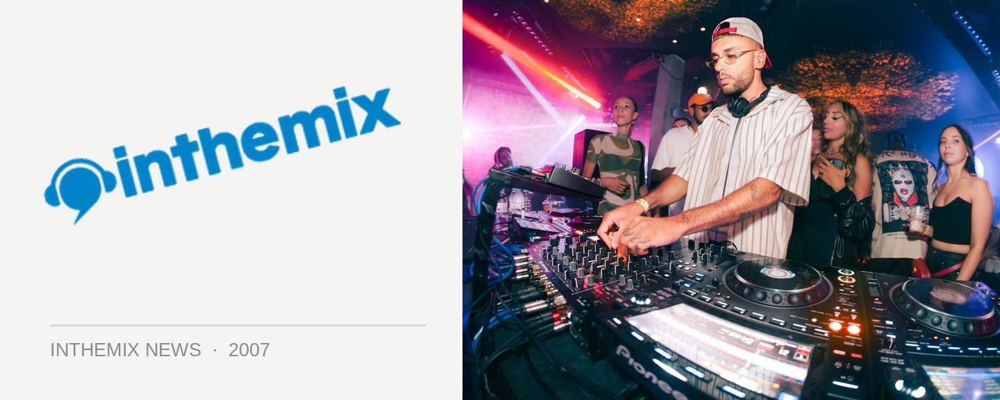

Dirty Funken’ Beats takes over Cargo
From its humble beginnings as a Friday club night at Dragonfly, Dirty Funken’ Beats has developed to become one of the country’s most in-demand club brands. Massive events have been held at Cabana Bar and at Sounds on Sunday this year, and now it’s Cargo Bar’s turn.
Epitomising the classy side of rockin’ electro house without the attitude, the organisers like to term it “Elegant Debauchery”. And its first venture into the world of day events should and will be nothing short of extremely impressive. There will be a huge sound system upgrade on the day with the DJ booth being moved outdoors, and a huge dancefloor created only metres from the waters edge so that everyone can revel in the Summer sunshine. There’ll also be a VIP area on the upper level
Check the lineup for the Dirty Funken Beats ‘Sundown’ party! Tickets on sale now through ITM.
Ben Morris
Brenden Fing
Gus Da Hoodrat (Bang Gang Deejays)
Jace
Jaime Doom (bang gang deejays)
John Glover
Matt Ferreira
Matt Roberts
Matttt&Tomass
Sam Lamore (Tonite Only)
Seany B (Live)
Stafford Brothers & Timmy Trumpet
Steve Play
Tim Sea
Tommy Trash
Tony Venuto
Trix